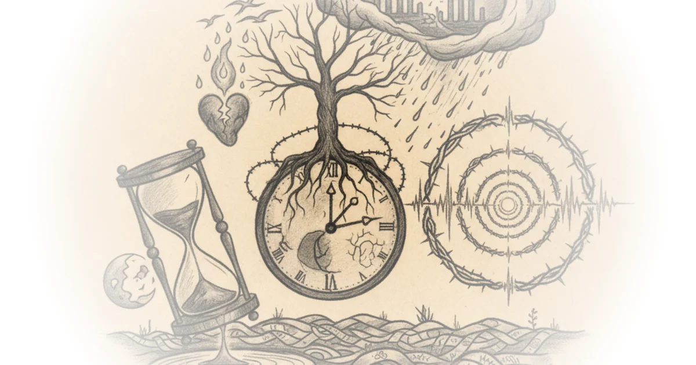

Living by a Trauma Calendar
Every February, millions of Ukrainians brace themselves not for winter's end but for a psychological storm that arrives on schedule. The Counteroffensive reports on the "anniversary effect" -- the phenomenon in which the body relives traumatic events as their calendar dates approach -- and makes a compelling case that Ukraine is a nation running on two clocks: the ordinary one and the one seared into memory by war.
The article opens with Natalia Kolosovska, a 31-year-old from the Lviv region whose trauma calendar stretches back not to 2022 but to 2014, when the Revolution of Dignity and Russia's first invasion rewired her nervous system.
"I turn into a function, into a robot. My brain doesn't care what year it is now -- for my brain, these [February] days are simply 2014."
That layering matters. For Natalia, February 24, 2022 did not create a new wound so much as deepen an existing one. She wakes in the night and momentarily sees 2014 on her phone screen. Thunder makes her flinch. She has stopped eating green apples because they remind her of tanks -- an association she herself cannot fully explain. These are not metaphors. They are the body's filing system, cross-referencing sensory inputs with stored danger.

The Psychology of Cyclical Retraumatization
Psychologist Vita Bakovska provides the clinical framework. Unprocessed trauma, she explains, does not sit quietly in the past. It is stored in the present tense.
"If a trauma hasn't been processed, it is stored as if it is happening right now... During an anniversary, it resurfaces in the unconscious as though the situation is unfolding again in the present. That's why we feel fear, the urge to cry, or experience reactions we can't fully explain, as if nothing is happening, yet we are anxious and our stress levels rise."
The effect operates on multiple levels -- emotional (unexplained anxiety, irritability), cognitive (intrusive memories), physical (insomnia, panic attacks), and behavioral (avoidance and isolation). Bakovska describes the cognitive dimension with a vivid analogy:
"We may find ourselves sitting in anticipation of a catastrophe, repeating the same thoughts over and over again. This is called rumination. In simple terms, it's like chewing gum: you keep chewing on the same thoughts and can't let them go."
What makes Ukraine's situation particularly brutal is that the anniversary effect typically applies to events that have ended. Ukrainians are reliving the start of a war that is still ongoing. The annual spike in distress arrives on top of a baseline that never fully recedes. As Bakovska notes, even those without direct personal trauma can be "emotionally infected" by the collective grief around them -- a kind of psychological contagion that turns an entire society into a resonance chamber each February.
Georgia's Parallel
The article wisely broadens its lens to include Mariam Lomsadze, a Georgian woman who was eight years old when Russia invaded her country in 2008. She still lives steps from the occupied territories, and nearly two decades later, the August anniversary still finds her.
"To this day, when the anniversary of the August war comes, I feel it. There's a specific anxiety... And there is a terrible feeling I cannot describe or explain rationally. It's as if the body itself remembers."
Mariam's childhood memories are startlingly specific. Her village bordered South Ossetia, where separatist military exercises were common enough that children initially ignored the gunfire -- until the sky turned red. Her family fled to Gori, one of the hardest-hit cities, where people buried the dead in their own yards because they could not reach the cemetery.
"We spent two nights hiding in a basement. We sat there, all of us, trembling with fear... there were cucumbers, and we couldn't even eat them properly because there was no water."
The Georgia parallel is not incidental. Russia used nearly identical pretexts in both invasions -- "protecting Russians" in breakaway regions -- and the psychological aftermath follows a similar pattern. It is worth noting, though, that Georgia's 2008 war lasted five days. Ukraine's has ground on for four years. If Mariam still feels August after a five-day war, the scale of what Ukrainians will carry is difficult to fathom.
Opposite Coping, Same Wound
One of the article's most revealing contrasts is how Natalia and Mariam cope in opposite directions. Mariam actively revisits the photographs and videos from 2008.
"Some people try to look away and forget, but I'm the opposite -- in that period I actually go back and look at the photographs and the videos from that time. Somehow, doing that makes me calmer. I feel obligated to look at them, so I never forget what Russia did."
Natalia, by contrast, shuts down entirely. She feels nothing -- not by choice but because the weight of accumulated loss overwhelms her capacity to grieve. In 2015 and 2016, she attended funerals for strangers killed by Russia, simply because those were the only spaces where her grief felt valid. She now operates on autopilot through February, eating and working mechanically while her nervous system runs its own grim anniversary loop.
Both responses -- deliberate confrontation and involuntary numbness -- are recognized trauma adaptations. Neither is wrong. But they illustrate that the anniversary effect is not a single experience; it is a spectrum, shaped by personality, proximity, and the specific texture of what was lost.
The Limits of Understanding
Natalia articulates something that trauma literature often circles around but rarely states so plainly:
"For those who haven't lived through this, it is pathologically difficult and sometimes impossible to understand. Not because they are bad or cruel, or somehow different, but because their scale of pain is different from ours."
This is a generous framing, and a realistic one. It sidesteps the accusation of indifference and names the actual barrier: the gap in experiential reference. For international audiences now four years into Ukraine coverage, fatigue is a documented phenomenon. But fatigue and the anniversary effect are not symmetrical. One is the weariness of watching; the other is the involuntary reliving of what was endured. The article does not belabor this point, but it sits beneath the surface of every testimony.
A psychiatrist once offered Natalia a framework for why her trauma extended beyond her immediate experience, despite living far from the front lines:
"Everything that once existed within your family has spilled over onto a national level and your brain just said: 'Now it's everywhere.'"
That diagnosis -- private dysfunction scaling to national crisis -- captures something essential about wartime psychology. The threat is no longer contained within one household or one relationship. It saturates the entire environment, and the brain, unable to distinguish between scales of danger, treats the whole country as a single, unbounded threat.
Bottom Line
The Counteroffensive delivers a piece of reporting that is intimate without being sentimental. The anniversary effect is a well-documented psychological phenomenon, but applying it to an entire nation still engaged in the traumatic event itself is a different order of magnitude. Ukraine does not have the luxury of looking back on its trauma from a safe distance. Each February is both commemoration and continuation. For Natalia, for Mariam, and for millions of others across Ukraine and Georgia, the calendar is not a neutral grid of days. It is a minefield, and the mines go off on schedule.